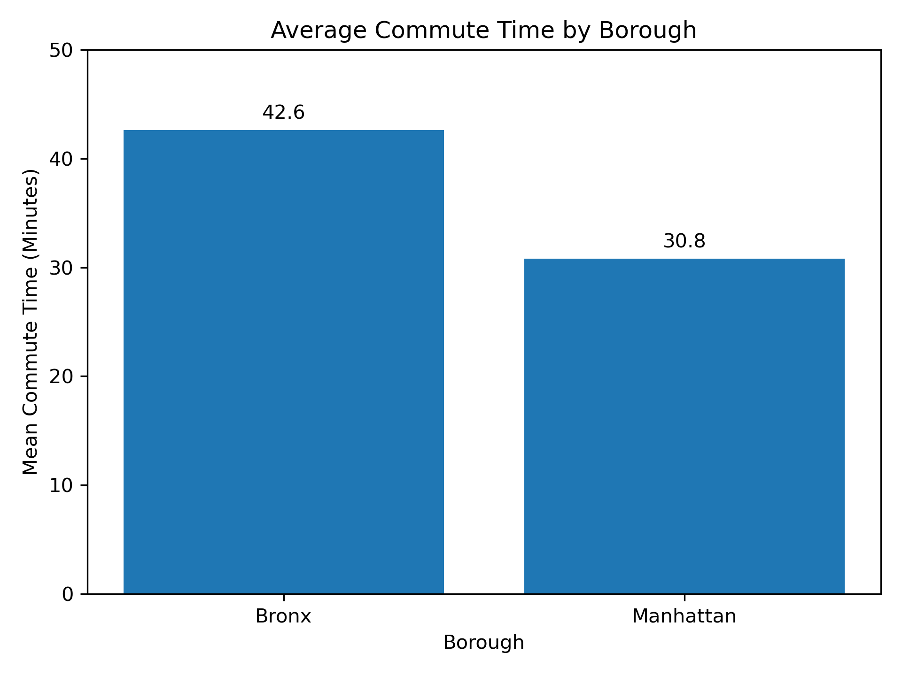
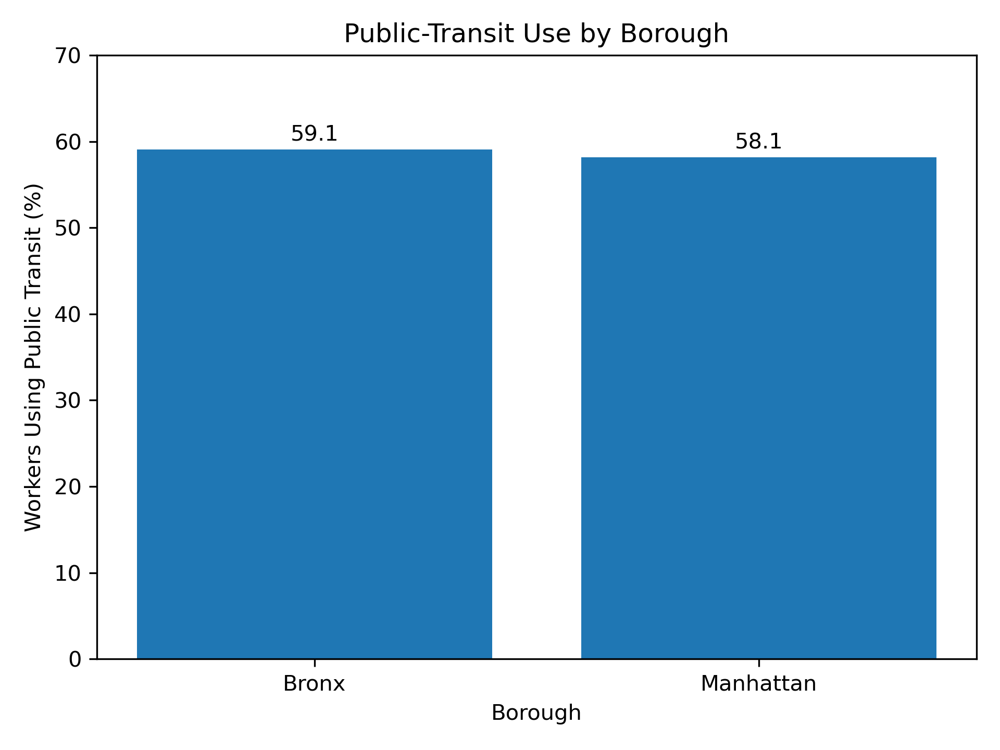

This project compares census tracts in the Bronx and Manhattan to examine whether similar levels of public-transit use are associated with different commuting outcomes.
Do Bronx census tracts experience longer commute times than Manhattan census tracts even though public-transit use is similar?
I used 2015 American Community Survey 5-year estimates from the U.S. Census Bureau. The final analysis contains 602 census tracts: 327 in the Bronx and 275 in Manhattan.
I compare average commute time and public-transit use across the two boroughs. I also examine neighborhood characteristics including income, poverty, unemployment, and working from home.

Bronx census tracts have an average commute time of about 42.6 minutes, compared with about 30.8 minutes in Manhattan. The difference is approximately 11.8 minutes.

Public-transit use is much more similar: approximately 59.1% in Bronx census tracts and 58.1% in Manhattan census tracts.
Similar reliance on public transportation does not relate to almost the same commuting outcomes. Bronx census tracts have longer average commute times even though public-transit use is nearly the same as in Manhattan.
Transportation inequality cannot be understood only by whether people use public transit ir not. The community burden is shaped by Where people live, where jobs are located, and neighborhood socioeconomic conditions. These results are descriptive and do not establish a causal relationship.